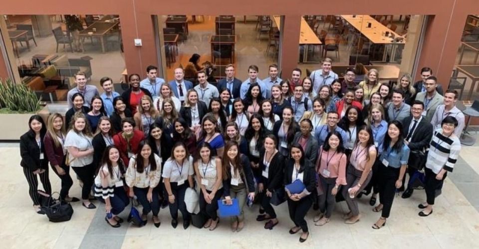

About Me
Hi I'm Ananya!
I'm a graduate of Drexel University (which would explain my Philly pride). Through my college's co-op program, I had the opportunity to work at a variety of different companies, ranging from a small local non-profit to a massive conglomerate. My diverse work experiences allowed me to explore my passions and refine my skills.
I believe that learning and growth never stops. This fuels my passion for technology and attracts me to the industry's dynamic nature. I enjoy connecting with people and drawn to opportunities within relationship management and the digital landscape.
Currently, I'm currently an Addressability Partner at PubMatic based in NYC. PubMatic is a digital advertising technology company who empowers premium app developers and publishers to maximize their programmatic advertising business. I have had the opportunity to learn a lot about the AdTech industry and help drive success for our partners.
Outside of my professional life, I enjoy running, dancing, and traveling! My goals are to eventually run a half marathon and travel to at least 5 different places each year. I love learning about new cultures and trying new food which is helpful when I travel!
Projects
International Consulting
Management 380 is offered at Drexel University and is a ten weeks of instructional class by a one-week international residency. Application, interview and acceptance to the course are required to participate.
Our assigned client was a small Romanian car rental company. Our class was split into teams that researched and ideated recommendations to solve for the company’s presented business problems. I served as our team’s project manager and ensured we met all deadlines. Due to this challenging course, I had the opportunity to gain real-world consulting experience and travel to our client’s HQ in Bucharest, Romania to present our final recommendations.
Back
Drexel University Bhangra
Bhangra is a highly energetic folk dance that originates from Punjab, India. Through this dance team, I was able to learn a new dance form, celebrate my Indian heritage, and take on a leadership position. As the captain, I was responsible for organizing daily practices, maintaining our social media accounts, and holding auditions. Our team was struggling with member retention and recruiting but after pitching new ideas to improve our campus presence, we were able to grow our team from 4 members to 22 in a few months.
Back
Collegiate Summit

The Marketing EDGE Collegiate Summit explores how the savviest companies and brands are creating targeted, multi-channel campaigns using digital, data-driven strategies. A select group of undergraduates from across the country will discover rapidly growing careers in data-driven and interactive marketing. We heard from executives from Facebook, NBCUniversal, EY, and other companies.
Back
Comcast Benefits Mailer
As a Human Resources Communications Co-op at Comcast, I took ownership of a 3-month long project to create benefits mailers that would be distributed to 100,000+ Comcast employees. I worked with the HR benefits team and compliance team to ensure the drafted content had updated branding and was approved to send out to employees. I managed communications with our contracted marketing agency to create the mailer and have it completed by the deadline. This project gave me insight on how to present to agencies, manage cross-team communication, and take ownership of a project.
Back
Contact Me